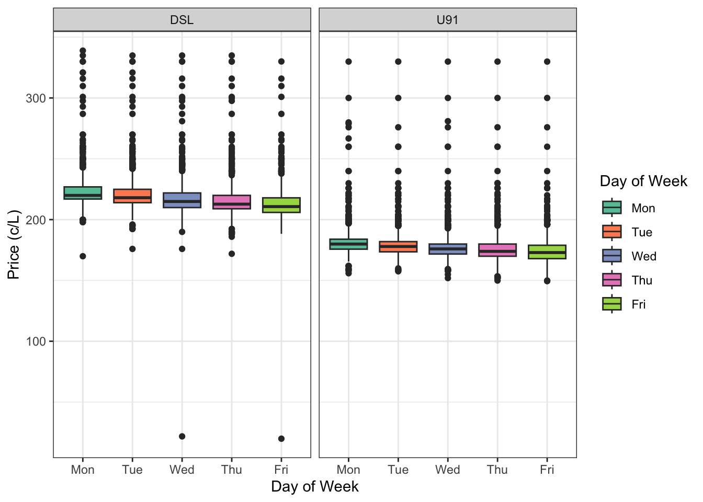
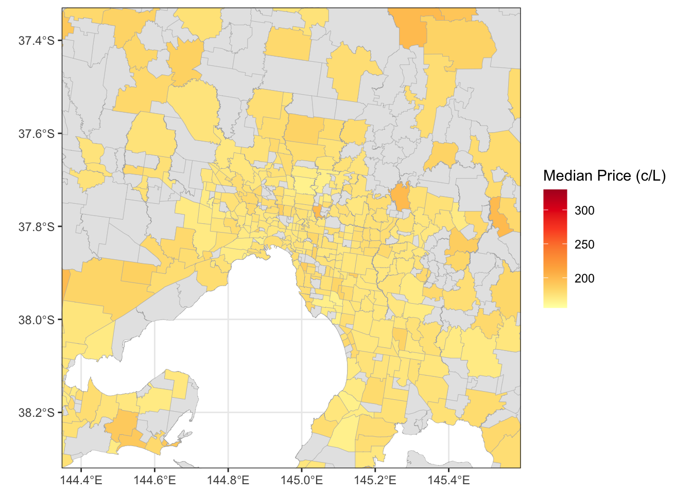
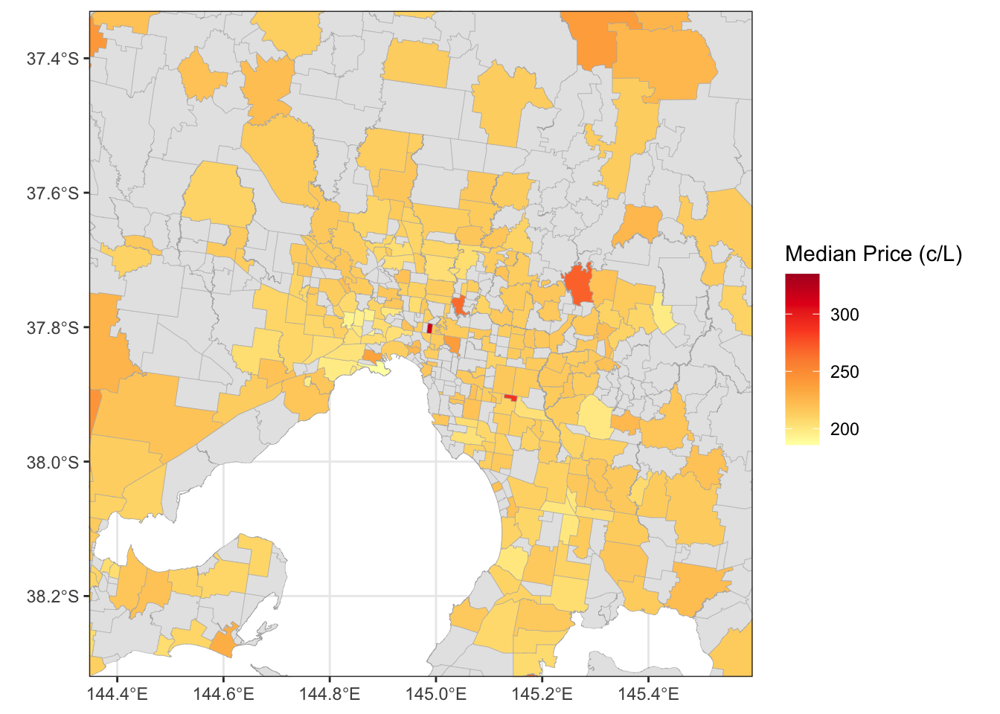
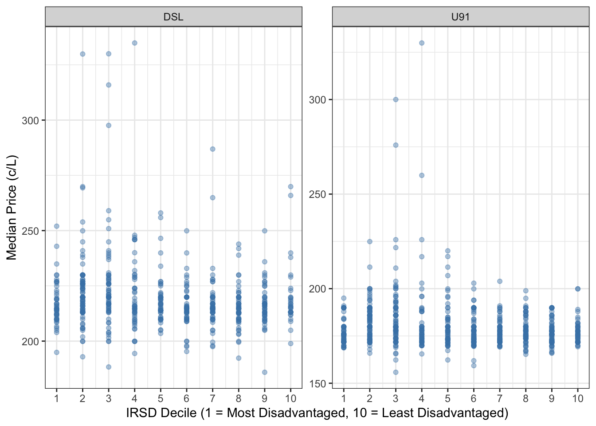

library(httr2)
# Request call
req <- request("https://api.fuel.service.vic.gov.au/open-data/v1/fuel/prices") |>
req_headers(
"User-Agent" = "MyApp/1.0",
"x-consumer-ID" = Sys.getenv("SERVO_API_KEY"),
"x-transactionid" = "6ff20493-4de0-4735-a036-e1e8dd41b33c"
) |>
req_user_agent("R httr2 servo-saver-client")
# Getting response
resp <- req_perform(req) |>
resp_body_json(simplifyVector = TRUE)
# Save raw data as a tibble
tibble::as_tibble(resp)Is there an optimal time and place to fill up your vehicle in Victoria?
Assignment 4 ETC5512
Topic:
Is there an optimal time and place to fill up your vehicle in Victoria?
What is the optimal day of the week to refuel?
Where is the best place to fill up?
Do socioeconomically disadvantaged areas pay more or less for fuel compared to wealthier areas?
While browsing the ABC’s national fuel price tracker (Casey Briggs and Julian Fell 2026) i noticed that Victoria’s data was absent, due to the way the state releases price information. As someone personally affected by the fluctuating fuel costs, I wanted to fill that gap and investigate whether there are smart times and places to refuel in Victoria, using the Servo Saver dataset.
Dataset:
Servo Saver Public API (Services Australia 2026)
Source: Service Victoria
Content: Fuel price data for all registered service stations across Victoria
Last Updated: 24-hour delay released
Data Type: Sample
Licence: Creative Commons Attribution 4.0 International licence
Limitation: Data refresh every 24-hour, there is no historical data. Data was pulled for 1 June 2026 to 5 Jun 2026 (Monday to Friday) only. It is just a snapshot in time, and may not be representative of how prices move. It is also dependent on fuel provider’s cooperation to update their prices.
Privacy/Ethics: Not personally identifiable information. Commercial data only.
ABS Digital Boundary Files (ABS 2025)
Source: Australian Bureau of Statistics (ABS)
Content: Spatial boundary shapefiles used to map service station locations to statistical areas for geographic price comparison.
Last updated: 2021
Data Type: GeoPackage/Shapefile
Licence: Creative Commons Attribution 4.0 International licence
Limitation: Boundaries released in 2021 and may not reflect recent urban developments.
Privacy/Ethics: No privacy concerns, geographic reference data only.
Socio-Economic Indexes for Areas (SEIFA), Australia 2021 (ABS 2023)
Source: Australian Bureau of Statistics (ABS)
Content: Uses 2021 Census data to summarise the socio-economic characteristics of an area (such as income, education, occupation, housing and family structure)
Last updated: 27 April 2023 (refences 2021 Census data)
Data Type: Derived census-based aggregate
Licence: Creative Commons Attribution 4.0 International licence
Limitations: Based on 2021 Census data and may not reflect current socioeconomic conditions.
Privacy/Ethics: Aggregated area-level data, no reidentification concern.
Servo Saver API:
- Obtain API access and authorisation from Servo Saver Public API webpage
- Access will take at least 24 hours, and the API key will be sent to applicants via email upon approval.
- Pull data
- Unnest raw data that has dataframes within rows (repeat for every day the data is extracted) - Data extracted at 11.50pm AEST everyday from 1 June to 5 June (Monday to Friday)
fuel_df_raw_1Jun <- resp$fuelPriceDetails |>
as_tibble() |>
unnest_wider(fuelStation) |>
rename(station_updatedAt = updatedAt) |>
unnest(fuelPrices) |>
unnest(location)
saveRDS(fuel_df_raw_1Jun, "data/raw/fuel_df_raw_2026-06-01.rds")- Combine all 5 days of data into one
library(tidyverse)
fuel_raw_1Jun <- readRDS("data/raw/fuel_df_raw_2026-06-01.rds")
fuel_raw_2Jun <- readRDS("data/raw/fuel_df_raw_2026-06-02.rds")
fuel_raw_3Jun <- readRDS("data/raw/fuel_df_raw_2026-06-03.rds")
fuel_raw_4Jun <- readRDS("data/raw/fuel_df_raw_2026-06-04.rds")
fuel_raw_5Jun <- readRDS("data/raw/fuel_df_raw_2026-06-05.rds")
fuel_raw_combined <- bind_rows(fuel_raw_1Jun,
fuel_raw_2Jun,
fuel_raw_3Jun,
fuel_raw_4Jun,
fuel_raw_5Jun
)- Process data and save
fuel_df_clean <-fuel_raw_combined |>
select(-openingHours, -id) |>
# Change timezone to Melbourne Time
mutate(
station_updatedAt_dt = ymd_hms(station_updatedAt, tz = "UTC") |>
with_tz("Australia/Melbourne"),
station_date = as.Date(station_updatedAt_dt, tz = "Australia/Melbourne"),
station_time = format(station_updatedAt_dt, "%H:%M:%S")
) |>
select(-station_updatedAt_dt, -station_updatedAt) |>
filter(!is.na(latitude), !is.na(longitude), !is.na(price),
fuelType %in% c("U91", "DSL"))
# Save processed data
saveRDS(fuel_df_clean, "data/processed/fuel_df_clean.rds")ABS Digital Boundary File and SEIFA
Navigate to ABS Digital Boundary Files
Download the Suburb and Localities (SAL) - 2021 - Shapefile
Navigate to Socio-Economic Indexes for Areas (SEIFA), Australia 2021
Download the Suburb and Localities, Indexes, SEIFA 2021.xlsx
Process and save SAL shapefile
library(sf)
# Read raw shapefiles
sal_raw <- st_read("data/raw/SAL_2021_AUST_GDA2020_SHP/SAL_2021_AUST_GDA2020.shp")
# Filter to Victoria only
sal_vic <- sal_raw |>
filter(STE_CODE21 == "2") |>
select(SAL_CODE21, AREASQKM21, geometry)
saveRDS(sal_vic, "data/processed/sal_vic.rds")- Read, process, join and save the SEIFA SAL data
library(readxl)
seifa_sal_raw <- read_excel("data/raw/Suburbs and Localities, Indexes, SEIFA 2021.xlsx",
sheet = "Table 1",
skip = 5)
# Rename headers
seifa_sal_clean <- seifa_sal_raw |>
rename(
SAL_CODE21 = 1,
SAL_name = 2,
IRSD_score = 3,
IRSD_decile = 4,
IRSAD_score = 5,
IRSAD_decile = 6,
IER_score = 7,
IER_decile = 8,
IEO_score = 9,
IEO_decile = 10
) |>
select(SAL_CODE21, SAL_name, IRSD_score, IRSD_decile, IRSAD_score, IRSAD_decile,
IER_score, IER_decile, IEO_score, IEO_decile) |>
mutate(SAL_CODE21 = as.character(SAL_CODE21)) |>
filter(startsWith(SAL_CODE21, "2")) # filter only Victoria SAL
# Save processed SEIFA SAL data
saveRDS(seifa_sal_clean, "data/processed/seifa_sal_clean.rds")
# Sanity check before joining
sum(sal_vic$SAL_CODE21 %in% seifa_sal_clean$SAL_CODE21)
# Join data
sal_seifa <- sal_vic |>
left_join(seifa_sal_clean, by = "SAL_CODE21")
# Save joined data
saveRDS(sal_seifa, "data/processed/sal_seifa.rds")- Process and save SA4 shapefile
sa4_raw <- st_read("data/raw/SA4_2021_AUST_SHP_GDA2020/SA4_2021_AUST_GDA2020.shp")
sa4_vic <- sa4_raw |>
filter(STE_CODE21 == "2") |>
select(SA4_CODE21, SA4_NAME21, geometry)
saveRDS(sa4_vic, "data/processed/sa4_vic.rds")References
R Packages
Wickham H (2025). httr2: Perform HTTP Requests and Process the Responses. doi:10.32614/CRAN.package.httr2 https://doi.org/10.32614/CRAN.package.httr2. R package version 1.2.2, https://CRAN.R-project.org/package=httr2.
Wickham H, Averick M, Bryan J, Chang W, McGowan LD, François R, Grolemund G, Hayes A, Henry L, Hester J, Kuhn M, Pedersen TL, Miller E, Bache SM, Müller K, Ooms J, Robinson D, Seidel DP, Spinu V, Takahashi K, Vaughan D, Wilke C, Woo K, Yutani H (2019). “Welcome to the tidyverse.” Journal of Open Source Software, 4(43), 1686. doi:10.21105/joss.01686 https://doi.org/10.21105/joss.01686.
Grolemund G, Wickham H (2011). “Dates and Times Made Easy with lubridate.” Journal of Statistical Software, 40(3), 1–25. https://www.jstatsoft.org/v40/i03/.
Pebesma E, Bivand R (2023). Spatial Data Science: With Applications in R. Chapman and Hall/CRC. https://doi.org/10.1201/9780429459016.
Pebesma E (2018). “Simple Features for R: Standardized Support for Spatial Vector Data.” The R Journal, 10(1), 439–446. https://doi.org/10.32614/RJ-2018-009.
Wickham H, Bryan J (2025). readxl: Read Excel Files. doi:10.32614/CRAN.package.readxl https://doi.org/10.32614/CRAN.package.readxl. R package version 1.4.5, https://CRAN.R-project.org/package=readxl.
Data Sources
ABS. 2023. Socio-Economic Indexes for Areas (SEIFA), Australia, 2021 Australian Bureau of Statistics. https://www.abs.gov.au/statistics/people/people-and-communities/socio-economic-indexes-areas-seifa-australia/latest-release.
ABS. 2025. Digital Boundary Files Australian Bureau of Statistics. https://www.abs.gov.au/statistics/standards/australian-statistical-geography-standard-asgs/edition-3-july-2021-june-2026/access-and-downloads/digital-boundary-files.
Casey Briggs, and Julian Fell. 2026. “Track the Latest Petrol and Diesel Prices Around Australia.” ABC News, April. https://www.abc.net.au/news/2026-04-01/petrol-diesel-price-tracker/106513484.
Services Australia. 2026. Servo Saver Public API. https://service.vic.gov.au/find-services/transport-and-driving/servo-saver/help-centre/servo-saver-public-api#h2-11.
Why does petrol always seem cheaper when you’ve just filled up?
Have you ever held off refueliling for a day or two, hoping to wait out the prices, only to finally pull in, pump a full tank and then pull out of the servo to find a competitor down the road charging ten cents less per litre? Well, I have! Is it just bad luck or is there a pattern hiding in the noise?
It was only until October 2025 that Victoria finally made this question answerable with the release of publicly accessible fuel price data through the Servo Saver API (Services Australia 2026). For the first time, drivers and researchers alike could look beyond the gut feeling and acutally interrogate the numbers.
The timing couldn’t have felt more relevant. When conflict broke out in Iran in March 2026, fuel prices in Australia began climbing and was more volatile than usual. If every trip to the servo already felt like a gamble, higher prices felt like higher stakes. It was only when the federal government’s fuel excise discount kicked in from 1 April that prices begin to stabilise. But during those volatile weeks in between, the pressure to pump at the “right” time felt very real.
What is optimal?
For the purpose of this post, optimal simply means cheapest. Not most convenient, not closest to home, just the lowest price per litre. Under Victoria’s Servo Saver scheme, each station publishes a daily price cap which is the maximum they can charge that day. This resets at 6am each morning. Using data pulled at 11:50pm daily from 1 June 2026 to 5 Jun 2026 (Monday to Friday), we treat this cap as a reasonable proxy for the day’s price, helping to smooth out intraday fluctuations that may occur as stations are permitted to reduce their price during the day.
While stations can charge less than the cap at any point during the day, and discounts or vouchers aren’t accounted for, comparing end of day caps across days and locations gives us a consistent and fair basis to find patterns.
What is the optimal day of the week to refuel?

If you have any flexibility when you fill up, the data suggests it’s worth holding out until the end of the week (Services Australia 2026). Across both diesel and unleaded 91, price maps followed a consistent downward trend from Monday through Friday. The difference however isn’t dramatic. For U91, median prices sat around 179.9c/L on Monday, drifting down to roughly 172.9c/L by Friday. Diesel followed a similar pattern with medians starting around 219.9c/L on Monday, and easing towards 210.7c/L by Friday.
It’s worth noting that the spread of outliers well above 300c/L exist on every day of the week which likely reflects regional and remote stations where prices are structurally higher regardless of the day. These pull the upper tail up but don’t change the overall story.
While this is a sample of only 5 days, a complete daily data for a longer period of time, say a month could give a better representation.
Where is the best place to fill up?
Victoria is quite big state, but let’s be honest, no one is driving an hour out of their way to save a few cents on petrol. So for this anlaysis, I narrowed the focus to a 50km radius from Melbourne’s CBD, in hopes of capturing the areas where most Victorians actually live and refuel.

| Suburb | SA4 Region | Median Price (c/L) |
|---|---|---|
| Heatherton | Melbourne - Inner South | 165.3 |
| Burnside (Vic.) | Melbourne - West | 165.5 |
| Kingsbury | Melbourne - North East | 165.5 |
| Reservoir (Vic.) | Melbourne - North East | 165.9 |
| Spotswood | Melbourne - West | 165.9 |
| Moorooduc | Mornington Peninsula | 166.1 |
| Frankston South | Mornington Peninsula | 166.7 |
| Mordialloc | Melbourne - Inner South | 166.7 |
| Seaholme | Melbourne - West | 167.1 |
| Bundoora (Vic.) | Melbourne - North East | 167.3 |
Looking at the choropleth map (Figure 2) (Services Australia 2026; ABS 2025, 2023) the first thing that stands out is how little variation there actually is. U91 median prices across the 50km radius sit within a relatively tight range of 34.6 c/L.
The 10 cheapest suburbs for U91 (Table 1) (Services Australia 2026; ABS 2025, 2023) reinforces this point. Rather than clustering in one direction, they are scattered across the north-east, inner south, west and the Mornington Peninsula. If distance from CBD were the main driver, we’d expect a tidier pattern.
For context, if you drive a Toyota Corolla with a fuel tank of 50L, that is a $17.3 savings per tank. Is that worth crossing the suburb for?

| Suburb | SA4 Region | Median Price (c/L) |
|---|---|---|
| Williamstown (Vic.) | Melbourne - West | 185.9 |
| Kingsville | Melbourne - West | 192.3 |
| Sunshine (Vic.) | Melbourne - West | 192.9 |
| Maidstone | Melbourne - West | 194.4 |
| Braybrook | Melbourne - West | 194.9 |
| Altona (Vic.) | Melbourne - West | 197.5 |
| Seabrook | Melbourne - West | 197.5 |
| Wandin North | Melbourne - Outer East | 197.9 |
| Lysterfield | Melbourne - Outer East | 198.9 |
| Seaholme | Melbourne - West | 199.5 |
Unlike U91 where cheap suburbs were scattered across multiple directions, eight of the ten cheapest diesel suburbs sit firmly in Melbourne’s West (Table 2) (Services Australia 2026; ABS 2025, 2023). That could point us to the areas that are likely to have a higher concentration of heavy vehicle traffic and industrial activity, driving competition among diesel retailers.
The choropleth map (Figure 3) (Services Australia 2026; ABS 2025, 2023) also reveals noticeable red patches near the CBD and inner east, suggesting some subrubs are pay significantly more for diesel than their neighbours just a few kilometres away. The variation is less uniform than what we saw with U91. Range is also wider at 130 c/L.
It is a lot clearer for diesel drivers that location matters more, and if you’re west of the city, you’re already sitting in the sweet spot.
Is fuel cheaper in more disadvantaged areas?

Going into this, I had assumed that more disadvantaged areas might enjoy slightly cheaper fuel, but it was more of a gut feeling than anything grounded in evidence. Perhaps lower-income communities have less disposable income, creating pressure on local servos to price more competitively.
The data (Figure 4) (Services Australia 2026; ABS 2025, 2023) however shows no clear trend in either direction. The median fuel prices aginst Index of Relative Socio-economic Disadvantage (IRSD), where the low score indicates relative greater disadvantage and higher scores the relative lack of disadvantage. The bulk of suburbs sit within the same price band regardless of where they fall on the socioeconmic scale for both U91 and diesel.
What can we learn from this?
It might feel counterintuitive, but honest takeaway from this analysis is that there’s no golden time to refuel. When you need petrol, you need it. That said, a few patterns did emerge. Friday tends to be the cheapest day of the week to fill up, and if you’re a diesel driver, Melbourne’s west is where you want to be. Beyond that, neither geography nor socioeconomic status proved to be a strong predictor of what you’ll pay at the pump.
This analysis raises more questions, and fuel prices could be shaped by forces well beyond suburb boundaries. Global oil market, supply and demand, and news events like the conflict in Iran earlier this year. Five days of data is merely a snapshot.
I would love to incorporate some of these broader drivers into the anlaysis and extending the time window to capture a fuller picture of the pricing cycle.
References
R Packages
Wickham H, Averick M, Bryan J, Chang W, McGowan LD, François R, Grolemund G, Hayes A, Henry L, Hester J, Kuhn M, Pedersen TL, Miller E, Bache SM, Müller K, Ooms J, Robinson D, Seidel DP, Spinu V, Takahashi K, Vaughan D, Wilke C, Woo K, Yutani H (2019). “Welcome to the tidyverse.” Journal of Open Source Software, 4(43), 1686. doi:10.21105/joss.01686 https://doi.org/10.21105/joss.01686.
Grolemund G, Wickham H (2011). “Dates and Times Made Easy with lubridate.” Journal of Statistical Software, 40(3), 1–25. https://www.jstatsoft.org/v40/i03/.
Pebesma E, Bivand R (2023). Spatial Data Science: With Applications in R. Chapman and Hall/CRC. https://doi.org/10.1201/9780429459016.
Pebesma E (2018). “Simple Features for R: Standardized Support for Spatial Vector Data.” The R Journal, 10(1), 439–446. https://doi.org/10.32614/RJ-2018-009.
Xie Y (2025). knitr: A General-Purpose Package for Dynamic Report Generation in R. R package version 1.51, https://yihui.org/knitr/.
Data Sources
ABS. 2023. Socio-Economic Indexes for Areas (SEIFA), Australia, 2021 Australian Bureau of Statistics. https://www.abs.gov.au/statistics/people/people-and-communities/socio-economic-indexes-areas-seifa-australia/latest-release.
ABS. 2025. Digital Boundary Files Australian Bureau of Statistics. https://www.abs.gov.au/statistics/standards/australian-statistical-geography-standard-asgs/edition-3-july-2021-june-2026/access-and-downloads/digital-boundary-files.
Casey Briggs, and Julian Fell. 2026. “Track the Latest Petrol and Diesel Prices Around Australia.” ABC News, April. https://www.abc.net.au/news/2026-04-01/petrol-diesel-price-tracker/106513484.
Services Australia. 2026. Servo Saver Public API. https://service.vic.gov.au/find-services/transport-and-driving/servo-saver/help-centre/servo-saver-public-api#h2-11.
Question 5
Pulling the fuel data with the API key took a while as the instructions in the Fair Fuel Open Data API documentation was not entirely clear. With the help of both Kris and AI to understand how to use the httr2 package and troubleshoot until it ran sucessfully. Once pulled, the raw data contained nested dataframes within the dataframe, which required unnesting before it could be used.
Data exploration was conducted using a test pull to understand what was captured and how to clean it. The timezone handling was particularly confusing as the timestamps were recorded in UTC by default despite being an Australian dataset. Since I planned to collect data each weekday at 11:50pm, and price caps reset at 6am daily, getting the timezone right was critical. A missed pull meant the data was gone for good.
The SEIFA data presented its own challenge. It came as an Excel file with merged header rows spread across multiple lines, which caused reading issues. R threw a long list of warning messages that were difficult to decipher at first. It took some trial and error before I realised the headers needed to be manually renamed after import to get the data into a usable shape. Filtering to Victoria-only records was also not straightforward at first as there was no explicit state column. The workaround came after noticing all Victorian Suburbs and Localities (SAL) codes begin with 2, which allowed me to filter the data reliable without needing a state identifier.
Question 6
One challenge I did not anticipate was the limitations of visualising fuel prices across all of Victoria. When plotted at the state level, the choropleth map was too zoomed out to reveal any meaningful spatial patterns, suburbs became too small to distinguish, and the sheer number of localities made the map visually overwhelming with little to interpret.
This led me to change my intended scope from all of Victoria to a 50km radius from Melbourne’s CBD. While this narrowed the analysis, it was a deliberate decision considering that most Victorians live within this corridor, and it produced a map that was actually readable. Trade-off: Most rural areas is excluded, and some of these areas did show up with high fuel prices. But from the perspective of someone who is looking for the optimal time and place to pump petrol, it might not make sense to travel that far out.
I had to learn with the help of AI to apply the 50km boundary, as I could not simply filter by suburb name. So I made use the the st_centroid that we had used previously and the help of AI to project it into a metre-based coordinate reference to ensure the distance were accurate, and then create a 50km buffer around that point. From there, I used the buffer’s bounding box to crop the map to the right boundaries instead of adjusting it manually until it fits. I also wanted it to be something I can justify, and in this case it was the 50km radius.
Question 7
I had initially set out to also explore whether the fuel provider or brand affects price. However, this proved difficult to execute cleanly. Station names in the dataset followed no consistent pattern. Entries like “Endeavour Alberton”, “AG Warehouse - Kiewa”, or “Lockington District Business Centre Inc” all had very different patterns, and that made it hard to reliably identify the underlying brand using string functions.
I also attempted to use brandID as an alternative grouping variable, but this too was inconsistent. For instance, some BP stations shared the same ID while others of the same brand carried different IDs entirely. Without a reliable way to verify that stations were grouped correctly, I couldn’t confidently include this in the analysis and it fell outside the final scope.
In future, I might attempt using an AI agent such as through ellmer package in R to intelligently parse and standardise the messy fuel providers into recognisable brand groups.
Question 8
I had used AI to help me with the codes for map visualisation as well as cleaning the raw fuel data and when I attempted to sort the fuel providers. For the most part, it was reliable, as I had a clear direction of the output and asked targeted questions with constraints that steer it in the right direction.
However, cleaning the fuel providers names was an extremely frustrating experience. Because I had no clear picture of what the cleaned output should look like, I struggled to guide AI effectively. Even when I provided screenshots of problematic cases, it was unable to handle them reliably, and couldn’t clearly justify the cleaning decisions it made. Without knowing what the correct output should look like, I also had no way to verify whether the result was trustworthy.
Question 9
I worked across four branches to test different analytical angles, as I was unsure early on what would work best.
V1.0 - This version attempts to use SA1 map to find the geographical trend, I had a feeling that it was too granular, but I just wanted to prove it and look at how it looks like visually. While the intention was that finer geography might pinpoint exact stations with the best prices, the resulting map was an information overload and told no clear story.
V2.0 - stepped up to SA2, which was a marked improvement in readability. I was initially happy enough with this to merge it back into the main branch and continue building from there.
V3.0 - is where things got messy. I discovered that SA2 only provided code names with no recognisable place references which is unhelpful for both readers and myself. I also spent time here attempting to clean the fuel provider brand names and exploring whether the number of distinct brands in each SA2 explained price variation. A spike in distinct brand counts in larger regional areas seemed to correlate with higher median prices, but I ultimately dropped this angle entirely. I couldn’t confidently verify the brand cleaning was correct, and in hindsight I should have been counting total number of servos rather than distinct brands.
V4.0 - I finally landed on SAL (Suburbs and Localities) as the geographic unit, which is far more recognisable to readers. I also introduced SA4 region names to give broader geographic context for suburbs that readers might not be familiar with.
AI citation
API pull and cleaning of
fuel_dfhttps://claude.ai/share/054c6c92-67f4-4624-bfa0-b9bdc72070e0SEIFA cleaning https://claude.ai/share/c692dcae-e42f-4828-91ac-46a125fef108
Task 2
- How to convert the dates to Mon to Fridayhow to use st_join
- how to ensure that SA4 with the largest overlap area is selected if SAL intersects with more than 1 SA4
- How to use centroid for radius of 50km
- how to creating bounding box
- how to filter out certain data with filter function or equivalent if both files are shapefiles https://claude.ai/share/f36368e7-7bdb-47c6-a995-d9d778b79235